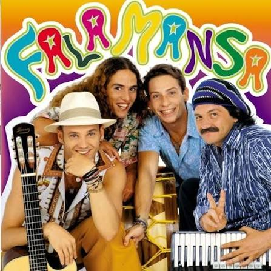

Uma banda de forro da São Paulo

Falamansa é uma banda brasileira de forró formada 1998 em São Paulo. É composta por Tato, Valdir, Dezinho e Alemão
Além de começarem a compor suas primeiras canções logo nos primeiros meses do conjunto, a banda interpretava sucessos de Luiz Gonzaga e Jackson do Pandeiro, misturando sempre o chamado "forró universitário" ou "forró pé de serra", com as raízes da música nordestina. Até 2001, o grupo teve mais de 1 milhão de cópias vendidas no Brasil.
"Não que a vida seja assim tão boa, mas um sorriso ajuda a melhorar"
Trecho de uma das suas canções
O vocalista Tato frequentemente ressalta que o Falamansa é uma banda com baixíssimo índice de rejeição. Suas canções são vistas como "atemporais" e unem diferentes gerações em grandes festivais.